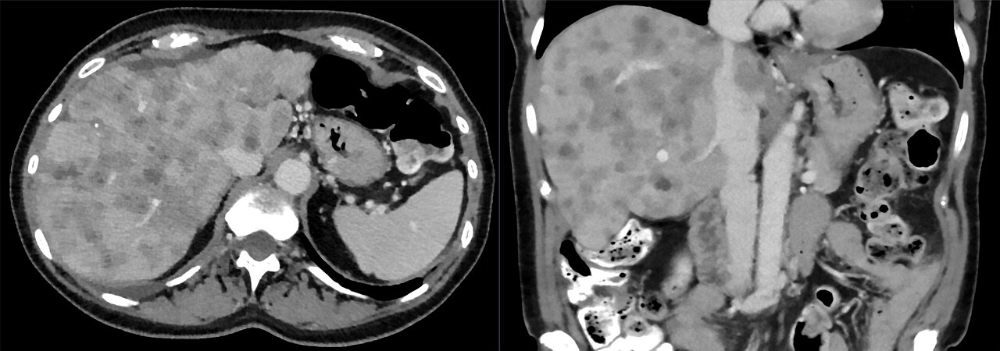

Ficha del catálogo
Metástasis hepáticas
- Sistema
- Digestivo
- Modalidad
- TC
- Región
- Hígado
- Dificultad
- Intermedio
Son la neoplasia maligna más frecuente del hígado, muy por encima de los tumores primarios hepáticos. Llegan por vía hematógena, sobre todo a través del sistema portal desde tumores del tubo digestivo, y también desde mama, pulmón, páncreas y melanoma. Su detección y recuento cambian el estadio, el pronóstico y la posibilidad de un tratamiento quirúrgico con intención curativa.
Técnica
La tomografía con contraste en fase portal es el estudio habitual de estadificación y seguimiento, porque en esa fase el parénquima realza al máximo y las lesiones hipovasculares destacan como defectos. Cuando se plantea cirugía hepática se prefiere resonancia con difusión y contraste hepatoespecífico por su mayor sensibilidad en lesiones subcentimétricas. La comparación con estudios previos con la misma técnica es esencial para valorar respuesta.
Qué observar
- Número, tamaño y distribución segmentaria de las lesiones
- Patrón de realce, especialmente el realce en anillo periférico
- Restricción a la difusión en resonancia y comportamiento en fase hepatobiliar
- Relación con las venas suprahepáticas, la porta y la vía biliar de cara a la resecabilidad
- Retracción capsular y calcificaciones, frecuentes en el origen colorrectal
- Volumen del futuro remanente hepático y cambios de esteatosis por quimioterapia
Hallazgos
Lo más habitual son múltiples lesiones de tamaño variable, hipovasculares en fase portal, con realce en anillo periférico y centro menos realzado por necrosis. Las metástasis hipervasculares, procedentes de tumores neuroendocrinos, renales, tiroideos o melanoma, se ven mejor en fase arterial y pueden desaparecer visualmente en fase portal. En resonancia son moderadamente hiperintensas en T2, restringen a la difusión y quedan hipointensas en la fase hepatobiliar por ausencia de hepatocitos funcionantes. Las lesiones tratadas pueden calcificarse o producir retracción de la cápsula.
Perlas
Un patrón de realce en anillo periférico con centro hipodenso es altamente sugestivo de metástasis, pero conviene recordar el signo del halo o diana, ya que también puede aparecer en abscesos. La clave está en el contexto clínico: Fiebre y leucocitosis orientan a absceso, mientras que un primario conocido y lesiones múltiples de distintos tamaños orientan a enfermedad metastásica.
Diagnóstico diferencial
- Abscesos hepáticos piógenos
- Cuadro febril con lesiones agrupadas en racimo, edema perilesional y realce de pared bien definida.
- Hemangiomas múltiples
- Muy hiperintensos en T2, con realce nodular periférico discontinuo y relleno progresivo que persiste.
- Quistes hepáticos simples
- Densidad de agua, sin realce, con pared imperceptible y refuerzo posterior en ultrasonido.
- Colangiocarcinoma intrahepático
- Lesión única dominante con retracción capsular y realce centrípeto tardío.
- Hepatocarcinoma multifocal
- Hígado cirrótico de base, con hiperrealce arterial y lavado en lugar de anillo periférico.
Simuladores
- Pseudolesiones de perfusión y áreas de esteatosis focal o de respeto graso
- Microabscesos por infección fúngica en pacientes inmunodeprimidos
- Quistes complicados o biliomas tras procedimientos
Por modalidad
- TC
- Estándar para estadificación, seguimiento y medición de respuesta; su fase portal detecta bien las lesiones hipovasculares
- US
- Detección inicial oportunista y guía de biopsias; el ultrasonido intraoperatorio es el más sensible para lesiones muy pequeñas
- RM
- Máxima sensibilidad para lesiones menores de 1 cm gracias a la difusión y a la fase hepatobiliar, clave antes de la cirugía
Protocolo
Tomografía con fase portal a los 70 a 80 segundos como mínimo, añadiendo fase arterial cuando se sospecha primario hipervascular. En resonancia se emplean T2 con supresión grasa, difusión con valores b bajos y altos, T1 dinámico multifásico y fase hepatobiliar a los 20 minutos con contraste hepatoespecífico. Se recomienda mantener la misma técnica en los controles para que las mediciones sean comparables.
Clasificación
El seguimiento de respuesta se informa con los criterios RECIST 1.1, que seleccionan hasta dos lesiones diana por órgano y un máximo de cinco en total, medibles si alcanzan al menos 10 mm en el eje mayor. La suma de diámetros define respuesta completa con desaparición de todas las lesiones, respuesta parcial con disminución de al menos 30 por ciento, enfermedad progresiva con aumento de al menos 20 por ciento y un incremento absoluto de 5 mm o aparición de lesiones nuevas, y enfermedad estable en el resto de los casos.
Errores frecuentes
- Estudiar solo en fase portal ante un primario hipervascular y no detectar lesiones que únicamente se ven en fase arterial
- Confundir quistes pequeños o pseudolesiones de perfusión con metástasis y sobrestadificar al paciente
- Medir lesiones en fases distintas entre estudios, lo que genera falsas respuestas o falsas progresiones

metastasis hepaticas realce en anillo fase portal RECIST difusion estadificacion higado